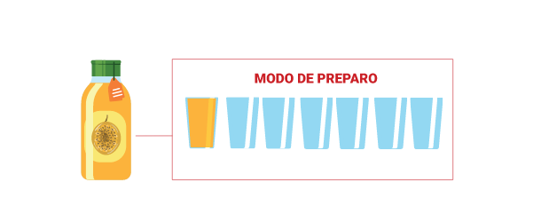

B)
QUAL É A CAPACIDADE DE CAIXA-D’ÁGUA IDEAL PARA SUA CASA?
Resposta pessoal.
3)
OBSERVE A CAPACIDADE DESTAS EMBALAGENS DE DESINFETANTE CONFORME AS INFORMAÇÕES DOS RÓTULOS.
SE VOCÊ PRECISAR DE 500 MILILITROS DE DESINFETANTE, SERÁ MAIS VANTAJOSO COMPRAR DUAS EMBALAGENS PEQUENAS OU UMA GRANDE?
1 litro
PREÇO
R$ 9,00
500 mL
PREÇO
R$ 4,60
Valéria Rezende
É mais vantajoso comprar a embalagem grande.
4)
NO RÓTULO DE UMA EMBALAGEM DE SUCO CONCENTRADO DE MARACUJÁ, HÁ A SEGUINTE RECOMENDAÇÃO:

MODO DE PREPARO
SUCO CONCENTRADO
ÁGUA
Valéria Rezende
A)
SE USARMOS 3 COPOS DE SUCO CONCENTRADO, QUANTOS COPOS DE ÁGUA PRECISAREMOS COLOCAR?
18 copos
B)
OBSERVE OS COPOS QUE UMA PESSOA UTILIZOU PARA FAZER UM SUCO.
Valéria Rezende
O SUCO FOI FEITO DE ACORDO COM A RECOMENDAÇÃO DO RÓTULO?
Não.